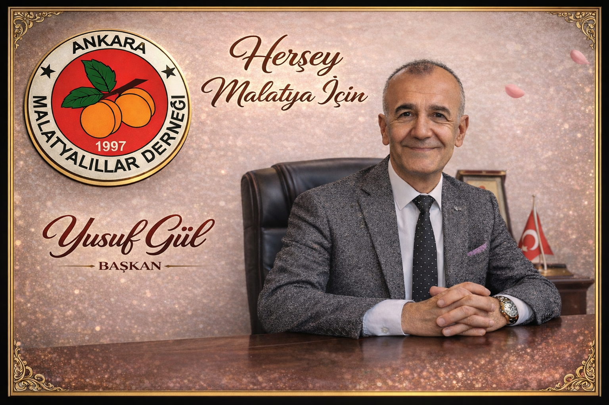

Dernek Faaliyetleri
Faaliyet
Derneğimizin sosyal ve kültürel çalışmaları daha görünür hale geliyor
Faaliyet raporları, ziyaretler, programlar ve topluluk çalışmaları burada paylaşılabilir.
Yazıyı Aç
Ankara Malatyalılar Derneği’nin faaliyetleri, kültürel etkinlikleri, toplumsal dayanışma çalışmaları, proje duyuruları, gençlik fırsatları ve Malatya’ya dair değerli içerikler bu sayfada sizlerle buluşuyor.
Bu bölüm; derneğimizin duyurularını, etkinlik haberlerini, kültürel paylaşımlarını, proje fırsatlarını ve toplum yararına gelişmeleri tek bir noktada toplamak amacıyla hazırlanmıştır.
Burada yer alacak yazılar sayesinde hem hemşehrilerimiz hem de ziyaretçilerimiz derneğimizin çalışmalarını daha yakından takip edebilecek, aynı zamanda faydalı içeriklere daha kolay ulaşabilecektir.
Faaliyetler, ziyaretler, toplantılar ve özel duyurular burada yer alabilir.
Malatya’nın kültürü, mutfağı, gelenekleri ve değerleri hakkında içerikler paylaşılabilir.
Gençlere, öğrencilere ve ailelere yönelik faydalı bilgilendirme yazıları yayımlanabilir.
Yeni proje çağrıları, destek programları ve sosyal fayda odaklı fırsatlar öne çıkarılabilir.
Derneğimiz; hemşehrilerimiz arasındaki bağı kuvvetlendirmek, kültürel değerlerimizi yaşatmak ve genç kuşaklara daha güçlü bir aidiyet hissi kazandırmak amacıyla yeni dönemde çeşitli sosyal, kültürel ve proje temelli faaliyetler planlamaktadır.
Bu alanda ilerleyen günlerde etkinlik takvimleri, özel duyurular, proje çağrıları ve toplumsal fayda sağlayacak çalışmalara ilişkin yeni içerikler paylaşılacaktır.
Devamını OkuToplantı, yemek, tanıtım günü, hemşehri buluşması ve özel programlar için ideal alan.
Blog bölümü aynı zamanda gençlerin ilgisini çekecek güncel içerikler için güçlü bir merkez olur.
Bu bölüm sitenin hem değerini hem de görünürlüğünü artırır.
Faaliyet raporları, ziyaretler, programlar ve topluluk çalışmaları burada paylaşılabilir.
Yazıyı AçKültür, aidiyet ve hemşehrilik bağını güçlendiren yazılar bu alanda yer alabilir.
Yazıyı AçGençlerin gelişimine katkı sağlayan fırsatlar bu sayfada düzenli duyurulabilir.
Yazıyı Açİhtiyaç sahiplerine destek, yardımlaşma ve sosyal sorumluluk içerikleri burada yer alabilir.
Yazıyı AçBurs, eğitim fırsatları, kariyer tavsiyeleri ve öğrenci odaklı yazılar için uygun alan.
Yazıyı AçProjeler sayfasını destekleyen, açıklayıcı ve yönlendirici blog içerikleri burada yayınlanabilir.
Yazıyı AçBu alanı kısa, dikkat çekici ve güncel duyurular için kullanabilirsiniz.
İnsanların hızlıca görmesini istediğiniz bilgi başlıkları için çok uygun bir bölümdür.
Bu yapı siteyi daha canlı, güncel ve kurumsal gösterir.
İsterseniz bu sayfayı bir sonraki aşamada gerçek blog düzenine çevirip; her yazıya ayrı bağlantı, görsel alanı, tarih, kategori ve “devamını oku” sayfası da ekleyebiliriz.
İletişime Geç